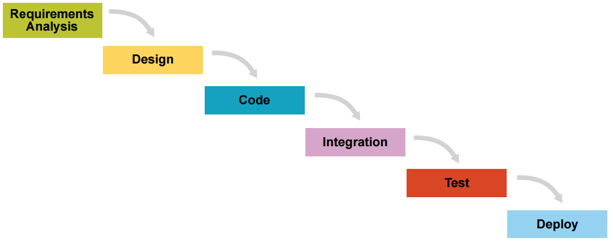
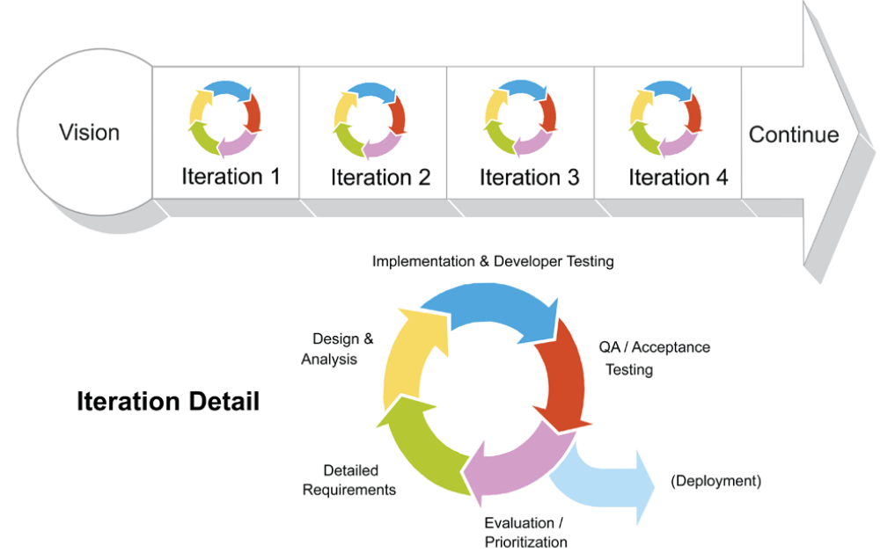

- Day 2 -
4rd April 2017
What is Scrum?
Scrum is a management framework for incremental product
development using one or more cross-functional, self-organizing teams
of about seven people each.
It provides a structure of roles, meetings, rules, and artifacts. Teams are
responsible for creating and adapting their processes within this
framework.
Scrum uses fixed-length iterations, called Sprints. Sprints are no more
than 30 days long, preferably shorter. Scrum teams try to build a
potentially releasable (properly tested) product increment every Sprint.
Scrum’s incremental, iterative approach trades the traditional phases of
"waterfall" development for the ability to develop a subset of high-value
features first, incorporating feedback sooner.
|

Traditional “waterfall” development depends on a perfect understanding of the product requirements at the outset and minimal errors executing each phase |

Scrum blends all development activities into each iteration, adapting to discovered realities at fixed intervals |
|---|
The greatest potential benefit of Scrum is for complex work involving
knowledge creation and collaboration, such as new product
development. Scrum is usually associated with object-oriented software
development. Its use has also spread to the development of products
such as semiconductors, mortgages, and wheelchairs.
In Scrum there are three roles: the Scrum Development Team, the Project Manager, and the Scrum Master.
Scrum Development Team
- Cross-functional (e.g., includes members with testing skills, and others not traditionally called developers: business analysts, designers, domain experts, etc.)
- Self-organizing / self-managing, without externally assigned roles
- Plans one Sprint at a time with the Product Owner
- Has autonomy regarding how to develop the increment
- Intensely collaborative
- Most successful when located in one team room, particularly for the first few Sprints
- Most successful with long-term, full-time membership. Scrum moves work to a flexible learning team and avoids moving people or splitting them between teams
- 6 ± 3 members
- Has a leadership role
Project Manager
- Single person responsible for maximizing the return on investment (ROI) of the development effort
- Responsible for product vision
- Constantly re-prioritizes the Product Backlog, adjusting any longterm expectations such as release plans
- Final arbiter of requirements questions
- Decides whether to release
- Decides whether to continue development
- Considers stakeholder interests
- May contribute as a team member
- Has a leadership role
Scrum Master
- Works with the organization to make Scrum possible
- Ensures Scrum is understood and enacted
- Creates an environment conducive to team self-organization
- Shields the team from external interference and distractions to keep it in group flow (a.k.a. the zone)
- Promotes improved engineering practices
- Has no management authority over the team
- Helps resolve impediments
- Has a leadership role
Terms
The terminology used for scrum was derived from the well known game of rugby. A scrum is a means of restarting play after a minor infringement. It involves up to eight players from each team, which bind together in rows and interlock with the opposing team. If you apply this in the corporate context a scrum involves the team working closely together and coming together before and after a MVP is produced. Also, a scrum is divided into sprints. In the context of rugby to score a try you need to reach the end of the opponents side (final scaled product). To do this you must pass within the team and press up by giving the ball to a player and they sprint towards the try line. Often more than one player will have to sprint before the ball reaches the try line and therefore in a scrum there are many sprints.

Overview
In traditional, functionally-separated organizations, there is rarely a cross-departmental integration of these functions with IT operations. But DevOps promotes a set of processes and methods for thinking about communication and collaboration – between departments of development, QA (quality assurance), and IT operations. In some organizations, this collaboration involves embedding IT operations specialists within software development teams, thus forming a cross-functional team – this may also be combined with matrix management.
Goals
The specific goals of DevOps span the entire delivery pipeline. They include improved deployment frequency, which can lead to:
- Faster time to market
- Lower failure rate of new releases
- Shortened lead time between fixes
- Faster mean time to recovery (in the event of a new release crashing or otherwise disabling the current system)
Simple processes become increasingly programmable and dynamic, using a DevOps approach. DevOps aims to maximize the predictability, efficiency, security, and maintainability of operational processes. Very often, automation supports this objective.
DevOps integration targets product delivery, continuous testing, quality testing, feature development, and maintenance releases in order to improve reliability and security and provide faster development and deployment cycles. Many of the ideas (and people) involved in DevOps came from the enterprise systems management and agile software development movements.
DevOps aids in software application release management for an organization, by standardizing development environments. Events can be more easily tracked, as well as resolving documented process control and granular reporting issues. The DevOps approach grants developers more control of the environment, giving infrastructure more application-centric understanding.